FofoPaint
와콤 드라이버 설정 창을 열고 맵핑 탭의 Windows 잉크 사용 체크를 해제해 주세요, 사용 시 선이 이상하게 그어집니다.
타블렛 사용시 펜 버튼에 마우스 오른쪽 키를 설정해 주세요. 툴 선택과 일부 기능은 마우스 오른쪽 버튼을 사용해야 편리합니다.
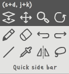
캔버스에 커서를 두고 마우스 오른쪽 클릭을 누르면 툴 메뉴가 나타납니다.
선택하고 싶은 툴 아이콘에 커서를 이동한 후 마우스 오른쪽 버튼을 떼면 선택됩니다.
캔버스 이동은 밝은 부분을 아무데나 클릭 후 드래그 하면 됩니다. (마우스 왼쪽+오른쪽 클릭 상태가 됨)
줌 툴, 회전 툴, 이미지 이동 툴은 캔버스 이동이 되지 않으며 툴 고유 기능을 사용합니다. (드래그를 이용)
채우기펜(fill-pen) 사용법은 툴을 선택후 캔버스에 원하는 영역을 그립니다. 클릭을 하면 다각형을 그릴 수 있습니다. 오른쪽 클릭을 하면 아이콘 3개가 나타나는데, undo버튼을 누르게 되면 그린 영역을 이전으로 돌릴 수 있습니다. OK버튼에 커서를 올려놓고 클릭을 떼면 채우기가 완료됩니다.
라소툴 사용법은 여기를 클릭
빠른 사이드 바(Quick side bar)는 측면에 있는 사이드 바를 현재 마우스 커서로 이동 시킵니다. 마우스 오른쪽 클릭을 하거나 사이드바 바깥 쪽을 클릭하면 원래 위치로 되돌아갑니다.
괄호 안의 알파벳은 (오른손잡이 단축키, 왼손잡이 단축키) 입니다.
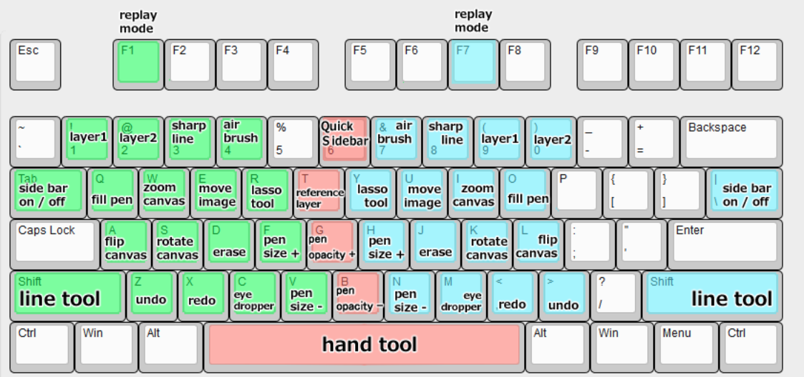
녹색 영역은 오른손잡이, 파란색 영역은 왼손잡이용 입니다. 기본적으로 키를 누르면 있으면 기능이 활성화되고, 떼면 꺼집니다. 버튼에 커서를 두면 힌트가 나타납니다. 해당 힌트 단축키 설명을 참고하세요.
| 기능 | 단축키 | 기능 | 단축키 |
|---|---|---|---|
| 그리기 또는 리플레이 모드 | F1 또는 F7 |
캡쳐 모드 | Ctrl+C |
| 파일 저장 | Ctrl+S |
다른이름으로 저장 | Ctrl+Shift+S |
| 파일 불러오기 | Ctrl+O |
클립보드에서 이미지 불러오기 | Ctrl+V |
| 기능 | 단축키 | 기능 | 단축키 |
|---|---|---|---|
| 레이어 1 선택 | 1 또는 9 |
레이어 2 선택 | 2 또는 0 |
| 단독 레이어만 보기/해제 | 레이어 선택 키를 여러번 누름 | ||
| 지우개 툴 | D 또는 J |
라소 툴 | R 또는 Y |
| 직선 툴 | Shift |
색 뽑기 툴 | C 또는 M |
| 투명색 선택 또는 취소 | C+Space 또는
M+Space |
||
| 참고 레이어 메뉴 보이기/숨기기 | T |
채우기 펜 | Q 또는 O |
| 펜 크기 조절 | F V 또는
H N |
지우개 크기 조절 | D+F
V 또는 J+H N |
| 펜 투명도 조절 | G B |
지우개 투명도 조절 | D+G
B 또는 J+G B |
| 캔버스 확대/축소 | W 또는 I |
캔버스 이동 | Space |
| 캔버스 좌우 반전 | A 또는 L |
캔버스 회전 | S 또는 K |
| 캔버스 이미지 이동 | E 또는 Y |
캔버스 크기 조절 | Ctrl |
| 작업취소 | Z 또는 . |
되돌리기 | X 또는 , |
| 빠른 사이드바 | S+D 또는
J+K 또는 6 |
| 기능 | 단축키 | 기능 | 단축키 |
|---|---|---|---|
| 리플레이 재생 시작/정지 | Enter 또는 Space
또는 캔버스 부분을 오른쪽 클릭 |
재생속도 조절 | ↑ ↓ 또는
F V 또는 H N |
| 스트로크 단위로 프레임 탐색 | ← → 또는
Z X 또는 . , |
1프레임 단위로 탐색 | Shift를 누른채로 왼쪽의 항목
키를 누름 |
| 기능 | 단축키 | 기능 | 단축키 |
|---|---|---|---|
| 전체(선택 영역) 이미지 저장 | Ctrl+S 또는
Ctrl+; |
클립보드로 복사 | Ctrl+C 또는
Ctrl+, |
| 나가기 | ESC |
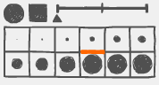
펜 모양과 크기, 손 떨림 보정 강도를 조절합니다.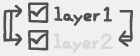
- 레이어 선택 상자입니다. 가장 왼쪽의 화살표는 레이어 1번과 2번의 이미지를 서로 바꾸는 기능입니다.글씨를 클릭하면 레이어가 선택됩니다. 중복으로 클릭하면 해당 레이어만 보기/해제가 가능합니다.
체크표시된 사각형 박스는 박스가 체크되면 이미지 이동 툴(move image)과 라소 툴(lasso)만 활성화 됩니다. 이 두개의 툴은 레이어 1번과 2번 전부 이미지를 수정합니다. 하지만 체크 표시가 켜져 있을경우 해당 레이어만 수정이 가능합니다.
오른쪽에 있는 화살표를 클릭하면 1번 레이어의 이미지가 2번 레이어에 합쳐집니다.
선의 느낌이 날카로워 집니다.
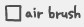
선의 윤곽이 흐려집니다.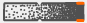
펜 투명도를 조절 합니다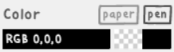
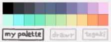
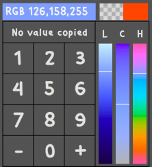
리플레이 모드, 그리기 모드로 변경하는 버튼입니다.
캡쳐모드로 변경하는 버튼입니다.
저장 버튼입니다. 처음 저장할 때만 경로와 이름을 묻고, 그
다음에 클릭할때는 처음 지정한 경로와 이름으로 저장됩니다. - 새로운
경로와 이름으로 저장하고 싶다면, 저장 버튼을 오른쪽 클릭하거나 단축키
Ctrl+Shift+S를 누르세요. - .png 파일과 .2020 파일,
2개를 저장합니다. 2020 확장자의 파일은 원본 이미지와 리플레이 데이터를
담고 있습니다. 이어서 그릴경우 *.2020 파일을 불러오는것을 권장합니다. -
이미지크기와 리플레이 파일이 클 경우 저장시간이 오래 걸릴 수 있습니다.
저장하는 과정에서는 일부 버튼이 비활성화 됩니다.
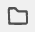
불러오기 버튼입니다. .2020 파일과, .png, .gif, .jpg파일을 불러올 수 있습니다. - 파일을 드래그 & 드롭으로 창에 끌어놓아 불러올 수도 있습니다. - 프로그램에서 지원하는 최대 해상도는 2000x2000이며, 이미지가 이 해상도를 넘을 시 강제로 리사이즈 됩니다.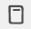
클립보드에 복사된 이미지가 있으면 이 버튼이 활성화 됩니다. - 또한, 이미지 파일과 *.2020파일이 클립보드에 복사 되어있어도 활성화 됩니다. - 단축키는Ctrl+V입니다.
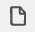
새 파일을 만드는 버튼입니다. 단축키ESC 또는
Delete를 두 번 눌러도 됩니다. - 새 파일이 만들어지면 기존
이미지와 리플레이 데이터가 완전히 사라지게 되니 사용하기 전에 데이터를
저장하세요.
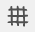
격자 표시 버튼입니다. 누를때 마다 격자 간격이 변하거나 꺼집니다.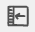
툴 메뉴 위치를 좌/우로 변경하는 버튼입니다.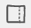
툴 메뉴를 감추는 버튼입니다. - 커서를 창의 가장자리에 가져가면 툴 메뉴가 보여집니다.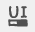
인터페이스의 색깔을 바꾸는 버튼입니다.새 창을 띄웁니다. - 캔버스 이미지를 확인 할 수 있는 창입니다. - 새 창에 마우스 오른쪽 클릭 하면 창크기가 이미지에 맞춰 조정됩니다. - 새 창이 활성화 된 상태에서 esc키를 누르면 창이 닫힙니다. - 창 내부를 클릭+드래그 하면 창 위치를 이동 시킬 수 있습니다.
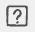
프로그램 정보를 보여주는 버튼입니다. - 언어별로 설명서를 볼 수 있고, 앱을 초기화 하는 버튼이 있습니다. - 새 버전이 감지되면 느낌표 표시로 바뀝니다. 업데이트 내용에 따라서 앱이 초기화 되는 경우가 있으니 업데이트 하기전에 작업을 저장하세요. - 업데이트 실패 할 경우 런타임을 최신버전으로 설치 하시기 바랍니다. https://airsdk.harman.com/runtime현재 그려지고 있는 이미지를 캡쳐 하는 버튼 입니다.
현재 그려지고 있는 이미지를 처음으로 하여 새 파일을 만듭니다. - 새 파일이 만들어지면 기존 이미지와 리플레이 데이터가 완전히 사라지게 되니 사용하기 전에 데이터를 저장하세요.
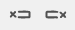
데이터 앞/뒤 지우기 버튼입니다. - 프레임 탐색막대에서 원하는 시점으로 이동한 후에 이 버튼을 2초간 누르세요. - 이 버튼을 이용하여 원하는 리플레이 데이터만 남길 수 있습니다. 이 버튼을 사용하면 그리기 모드에서 그리고 있는 그림에도 영향이 있으므로 주의하세요. - 데이터 뒤 지우기는 undo와 같은 기능을 합니다. 사용하면 그리기 모드에서 그리고 있는 그림이 리플레이가 그려지고 있는 시점으로 돌아갑니다. - 지워진 데이터는 복원할 수 없으니 주의해서 사용하세요.캔버스를 확대/축소하는 버튼입니다. 마우스 오른쪽 버튼을 클릭하면 줌이 초기화 됩니다.
캔버스를 창 중앙에 위치 시킵니다. 클릭 할 때마다 켜지거나 꺼집니다.
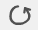
캔버스를 회전하는 버튼입니다. 클릭한 후 좌우로 드래그 하세요. 리플레이를 스트로크 단위로 이동하는 버튼입니다. 이 버튼을
오른쪽 클릭하거나, Shift키를 누른채로 클릭하면 1프레임
단위로 탐색할 수 있습니다.
이 버튼이 활성화 되어있으면 리플레이가 종료되었을때 10초 후에 다시 반복합니다.
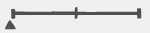
리플레이 재생 속도를 조절 할 수 있는 막대 입니다. - 재생시간이 짧은 경우에는 활성화되지 않습니다.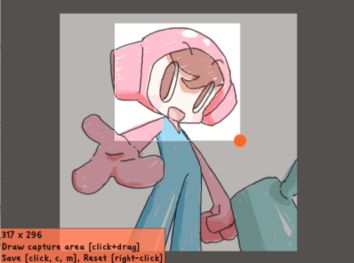
캡쳐모드를 종료하는 버튼입니다.
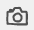
전체 이미지를 저장하는 버튼입니다. - 캡쳐 모드에서 이미지에 클릭+드래그로 영역을 지정하여 저장할 수도 있습니다.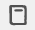
전체 또는 선택된 영역을 클립보드로 복사합니다. 클릭하면 중복 복사를 방지 하기 위해서 버튼이 비활성화 되며, 영역을 새로 선택하거나 이미지가 회전/반전 등이 된 경우 다시 활성화 됩니다.이미지를 회전하는 버튼입니다.
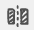
이미지를 좌/우 반전하는 버튼입니다.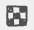
배경색을 투명하게 만드는 버튼입니다.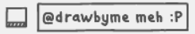
이미지에 스탬프를 추가합니다. 코멘트를 2줄까지 작성할 수 있고, 저장된 날짜와 앱의 버전도 같이 표시됩니다.R, Y 키를
누른채로) 영역을 그리면 메뉴가 나타납니다.선택한 영역의 이미지를 참고 레이어로 이동 시킵니다. 참고 레이어에 이미지가 그려져 있을경우 그 위에 그려집니다.
선택된 영역의 레이어 위치를 교환합니다. 실수로 2번 레이어에 선화를 그렸을 때, 이 기능을 이용해서 이미지의 일부를 1번 레이어로 이동시킬 수 있습니다. 한쪽 레이어가 보이지 않거나, 체크되어있는 경우는 사용 할 수 없습니다.
선택된 영역의 레이어를 2번 레이어로 합칩니다.
선택된 영역을 좌우 반전합니다.
선택된 영역을 1픽셀씩 움직입니다.
선택된 영역을 복사합니다.
선택된 영역을 회전하거나 확대/축소 합니다.
현재의 이미지를 참고 레이어로 이동시키는 버튼입니다. - 참고 레이어에 이미 이미지가 그려져 있을경우 그 위에 계속 그려집니다. - Undo버튼을 누르면 사라진 이미지를 복원 할 수 있습니다. - 본 레이어에 밑그림을 그리고 이 버튼을 눌러 이미지를 참고 레이어로 보낸다음, 그 그림을 참고하여 깔끔하게 그림을 그릴 수 있습니다.
참고 레이어에 다른 이미지를 불러오는 버튼입니다. - 참고 레이어에 있는 이미지 지워지고 불러온 이미지가 새롭게 그려집니다. - 트레이싱 연습을 하고자 할때 이미지를 이 버튼을 이용하여 이미지를 불러올 수 있습니다.
클립보드에 복사된 이미지를 참고레이어로 복사 하는 버튼입니다 - 클립보드에 복사된 이미지가 있을경우 이 버튼이 활성화 됩니다.
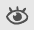
메모리 트레이닝 버튼입니다. - 이 버튼을 눌러 눈이 감겨지게 되면 그림을 그릴 때마다 참고 레이어가 보이지 않게됩니다. 트레이싱 연습을 할 때 형태를 기억하는 연습을 할 수 있습니다.참고레이어의 이미지를 지우는 버튼입니다.
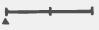
참고레이어의 투명도를 조절하는 막대입니다. - 참고 레이어에 새로운 이미지가 복사되면 투명도가 50%로 재조정 됩니다.Ctrl키를 누르거나 마우스 오른쪽 클릭을 1초정도
누르고 있으면 캔버스 주변에 테두리가 나타납니다.
그 때 원하는 테두리를 클릭+드래그 하여 캔버스를 원하는 크기로 조절합니다. 대각선 조정은 되지 않으며 가로 또는 세로만 조절 가능합니다.
Ctrl키를 떼거나 마우스 오른쪽 클릭을 떼면 캔버스
크기 조정이 종료됩니다.
캔버스 크기를 조절할 때 캔버스 경계의 격자 선에 커서를 대면 일정 비율에 맞게 조정이 가능합니다.
고해상도 모니터에서 창 크기배율을 125% 이상 설정했을때, 포포페인트 UI배율을 1:1로 할지 안할지를 설정합니다.
fofopaint.exe 파일을 찾습니다. 기본 설치를 했다면 C:Files (x86)경로에 있습니다.
fofopaint.exe 오른쪽 클릭, 속성에 들어갑니다. 호환성 탭을 클릭합니다.
높은 DPI설정 변경을 클릭합니다, 새 창 아래에 DPI재정의 탭이 활성화 되어있으면 FOFO PAINT 앱의 UI가 1:1배율 유지하고 체크가 해제 되어있으면 윈도우 창크기의 배율에 따라 약간 확대되어 보입니다.
만일 높은 DPI설정 변경이 되지 않는다면 “모든 사용자에 대한 변경”을 클릭하여, 다시 높은 DPI설정 변경을 클릭해 설정합니다.
윈도우 운영체제의 경우 < C: [사용자 이름] Store> 혹은 < %appdata%Store > 경로로 가시면 파일들이 있습니다 이 파일들을 전부 삭제 후 앱을 시작하면 앱이 초기화됩니다.
혹은 파일 검색에서 “repdata”라는 이름을 검색한 후, 해당 위치로 이동한뒤 파일들을 전부 지워주세요.
Uncheck “Use Windows ink” function on Wacom driver’s mapping tap. If you using non-wacom tablet. I’m not sure it is working correctly.
When using a tablet, “set the right mouse key” to the pen button. It is convenient to use the right mouse button for selecting tools and some functions.
Place your cursor on the canvas and right-click to display the Tools menu.
Move the cursor to the tool icon you want to select and release the right mouse button to select it.
To move the canvas, click+drag the bright part of the toolbox. (Left+Right-click of the mouse)
The zoom tool, rotation tool, and image movement tool do not move the canvas and use tool-specific functions. (Click and drag)
To use the fill-pen, select the tool and then draw the desired area on the canvas. You can draw a polygon with a simple click. When you right-click, three icons will appear. If you press the undo button, you can go back to the area you drew little by little. Place the cursor on the OK button and release the right-click to complete.
Quick side bar moves to the current mouse cursor. Right-click or click outside the sidebar to return to its original position.
Click here for instructions on how to use the lasso tool.
The alphabet in parentheses is (right-handed shortcut, left-handed shortcut)
The green area is right-handed, and the blue area is left-handed. By default, press the key to enable the feature and turn it off when you release it. Hints appear when you hover over a button. See the shortcut descriptions for those hints.
| Function | Shortcut | Function | Shortcut |
|---|---|---|---|
| Draw / Replay mode | F1 or f7 |
||
| Capture mode | Ctrl+C |
||
| Save file | Ctrl+S |
Save file as | Ctrl+Shift+S |
| Load file | Ctrl+O |
Load file from clipboard | Ctrl+V |
| Function | Shortcut | Function | Shortcut |
|---|---|---|---|
| Select layer 1 | 1 or 9 |
Select layer 2 | 2 or 0 |
| View only that layer ON/OFF | Press twice or more layer select shortcut | ||
| Check layer 1 | 1 + w or
9 + i |
check layer 2 | 2 + w or
0 + i |
| Erase | D or J |
Lasso | R or Y |
| Line | Shift |
Eye-droper | C or M |
| Select transparent color or cancel | C+Space or
M+Space |
||
| Reference layer window | T |
Fill pen | Q or O |
| Adjust pen size | F V or
H N |
Adjust erase size | D + F
V or J+H N |
| Adjust pen opacity | G B |
Adjust erase opacity | D+G
B or J+G B |
| Zoom in/out canvas | W or I |
Move canvas | Space |
| Flip canvas horizontal | A or L |
Rotate canvas | S or K |
| Move canvas image | E or Y |
||
| undo | Z or . |
redo | X or , |
| Quick Sidebar | S+D or
J+K or 6 |
| Function | Shortcut | Function | Shortcut |
|---|---|---|---|
| Playback Start/Stop | Enter or Space
or Right-click on the canvas |
Adjust playback Speed | ↑ ↓ or
F V or H N |
| Jump frame by stroke units | ← → or
Z X or . , |
Jump 1 frame | Press the item key on the left while
pressing shift |
| Function | Shortcut | Function | Shortcut |
|---|---|---|---|
| Save image | Ctrl+S or
Ctrl+K |
Copy image to clipbaord | Ctrl+C or
Ctrl+M |
| Rotate image | S or K |
Flip image horizontal | A or L |
| Background color ON/OFF | D or J |
Exit capture mode | ESC |
Adjust pen shape, size, and pen smoothing
- This is a layer selection box. The left side arrow is the function of swap the image of layer 1 and layer 2.
Click on the text to select the layer. Click twice or more to display or cancel that layer individually.
When the box is checked, only the move image tool and the lasso tool are activated. These two tools modify the image on both layers 1 and 2. However, if the checkmark is on, only that layer can be edited.
The right side arrow is the function of merge the layers.
It feels like a pixel line.
Pen like air brush
Adjust pen opacity
This button changes to replay mode and drawing mode.
Button to change to capture mode.
This is the Save button.The path and name are asked only for the first save. The next time you click it, it is saved with the path and name you specified. - Right-click the Save button or press the shortcut ‘Ctrl+Shift+S’ if you want to save it with a new path and name. - It makes .png files and .2020 files. The .2020 file contains raw images and replay data. If you continue to draw we recommend that you load the .2020 file - Large image sizes and replay files can take longer to save. During the save process, some buttons are disabled.
This is the Load button. You can load .2020 files and .png, .gif, .jpg files. - You can also drag and drop files to load image. - The maximum resolution supported by the program is 2000x2000. If the image exceeds this resolution, it will be forcibly resized.
If there is a copied image on the clipboard, this button is activated.
The button to create a new file. You can press the shortcut ‘ESC’ or ‘Delete’ twice. - When a new file is created, the existing image and replay data will delet completely, so save the data before using it.
Grid display button. Each press changes or turns off the grid spacing.
Button to change the tool menu position to left and right.
This button that hides the tool menu. - Move the cursor to the edge of the window to see the Tools menu.
This button that changes the color of the interface.
Displays a new window. - This is a window where you can see canvas image. - Right-click to adjust the window size to fit the image. - With the window active, press esc key to close the window. - You can move the position of the window by click+dragging inside the window.
This Button that shows program information. - You can view the manual by language and there is a button to initialize the app. - When a new version is detected, it changes to an exclamation mark display. Depending on the update, the application may be initialized, so please save the data before updating. - If the update fails, please install the runtime to the latest version. https://airsdk.harman.com/runtime
This button captures the image currently being drawn.
Create a new file with the currently drawn image first. - Once a new file is created, the existing image and replay data will delete completely, so save the data before using it.
A button that delete the front/back part of the replay data.
Press this button for 2 seconds after moving to the desired point in the frame search bar. Use this button to leave only the replay data you want. You should be careful because the replay data operation also affects the picture you draw in draw mode.
Zoom in/out canvas. Right-click to reset zoom.
Align the canvas to the center of the window. Every time you click, it turned ON/OFF.
Rotates the canvas. Click and drag
this button that draw image by stroke unit. Right-click this button, or press and hold the ‘Shift’ key to draw by 1 frame.
If this button is activated, the replay will repeat 10 seconds later when it ends.
A bar that can control the replay speed. - Not active if playback time is short.
Exit capture mode.
Save the full image. - In capture mode, you can also save images by specifying areas with click+drag.
Copy the entire or selected area to the clipboard. Once used, the button is disabled to prevent duplicate copies. If a new area is selected or the image is rotated/inverted, it will be reactivated.
Rotate image
Flip image horizontal.
Transparent background ON/OFF.
Add stamps to images. You can write a comment of up to two lines, and the saved date and app version are also displayed.
R
Y) and draw the desired area on canvas.Tranfer the image of the selected area to the reference layer. If an image is already drawn on the reference layer, it continues to be drawn on it.
Swaps the layer positions of the selected images. If you accidentally drew a line drawing on layer 2, you can use this function to move part of the image to layer 1. Cannot be used if one layer is invisible or checked.
Merge the layers of the selected area into layer 2.
Flip horizontal the selected area.
Move the selected area by 1 pixel.
Copies the selected area.
Rotate or zoom in or out of the selected area.
Button to transfer current image to the reference layer. - If an image is already drawn on the reference layer, it continues to be drawn on it. - Press the Undo button to restore the original image. - Draw a sketch on this layer, press this button to transfer image to the reference layer, and draw clean by referring to the image of the reference layer.
This is a button that loads another image into reference layer. - The image in the reference layer is erased and the imported image is newly drawn. - When you want to practice tracing, use this button to load the image.
Button to copy images copied to the clipboard to the reference layer - This button is activated if there is a copied image on the clipboard.
Memory training button. - If you press this button to close eye, the reference layer becomes invisible each time you draw. When you practice image trace, you can practice remembering the shape.
Delete image of reference layer
A bar that controls the transparency of the reference layer. - When a new image is copied to the reference layer, transparency is readjusted to 50%.
Hold down the Ctrl key or the mouse right click for
a second to see a border around the canvas.
Then click and drag the desired border to adjust the canvas to the desired size. No diagonal adjustment, only horizontal or vertical adjustments are possible.
Release the Ctrl key or right-click to end the
canvas sizing.
When adjusting the canvas size, Hold the mouse cursor over the grid line that appears at the canvas boundary
When you are resizing the canvas, you can resize the canvas with a specific ratio by placing the mouse cursor over the grid line that appears at the canvas boundary.
When the window size scale is set to 125% or higher on a high-resolution monitor, set whether FOFO Paint UI scale is 1:1 or not.
Find the fofopaint.exe. If you did a default installation, it’s in the path “C:Files (x86)”
Right-click fofopaint.exe and go to Properties. Click the Compatibility tab.
Click Change high DPI setting, if the DPI override tab at the bottom of the new window is active, the UI of the FOFO PAINT app will maintain 1:1 scaling and If unchecked, it is slightly enlarged according to the magnification of the window size.
If the high DPI setting does not change, click “Change for all users” and click Change high DPI setting again to set it.
For Windows operating system, go to < C: [username] > or < %appdata%> path to find the file. After deleting all these files and launching the app, the app initializes.
Alternatively, search for the name “repdata” in file search, go to that location and delete all files.
ワコムドライバ設定ウィンドウを開き、マッピングタブのWindowsインク使用チェックを解除してください、使用時の線が変になります。
タブレットを使用する場合は、「マウスの右キー」をペンボタンに設定してください。 ツール選択や一部の機能を使いやすいです。
キャンバスにカーソルを置いてマウスの右クリックを押すと、ツールメニューが表示されます。
選択したいツールアイコンにカーソルを移動し、マウスの右ボタンを離すと選択されます。
キャンバスの移動は右クリック後、ツールボックスの明るい部分をクリックしてドラッグしてください。(マウスの左+右クリック状態になる)
ズームツール、回転ツール、イメージ移動ツールはキャンバス移動ができず、ツール固有の機能を使用します。 (クリックしてドラッグ)
塗りつぶしペン(fill-pen)の使い方は、ツールを選択した後、キャンバスに目的の領域を描きます。 単純クリックすると多角形を描くことができます。 右クリックするとアイコンが3つ表示されます。undoボタンを押すと描いた領域を少しずつ以前に戻ることができます。 OKボタンにカーソルを置いて右クリックを外すと完了です。
Lasso Tool使い方はここ
Quick side barは、側面にあるサイドバーを現在のマウスカーソルに移動させます。 マウスを右クリックするか、サイドバーの外側をクリックすると元の位置に戻ります。
括弧内のアルファベットは(右利きのショートカットキー、左利きのショートカットキー)
緑色の領域は右利き、青色の領域は左利き用です。 基本的にキーを押すと機能が活性化し、外すと消えます。
| 機能 | ショートカットキー | 機能 | ショートカットキー |
|---|---|---|---|
| お絵描き / Replayモード | F1 または
F7 |
||
| チャプチャーモード | Ctrl+C |
||
| ファイル保存 | Ctrl+S |
別の名前でファイル保存 | Ctrl+Shift+S |
| ファイル読み込み | Ctrl+O |
Clipboardからファイル読み込み | Ctrl+V |
| 機能 | ショートカットキー | 機能 | ショートカットキー |
|---|---|---|---|
| レイヤー１選択 | 1 または 9 |
レイヤー２を選択 | 2 または 0 |
| レイヤーを単独表示・解除 | レイヤ選択キーを２回以上押す | ||
| レイヤー１をチェック | 1 + w または
9 + i |
レイヤー２をチェック | 2 + w または
0 + i |
| 消しゴム | D または J |
Lasso | R または Y |
| 直線 | Shift |
スポイト | C または M |
| 透明色を選択（取り消し） | C+Space または
M+Space |
||
| 参考レイヤー窓 | T |
Fill pen | Q または O |
| ペンサイズ調節 | F V または
H N |
消しゴムサイズ調節 | D + F
V または J+H N |
| ペン透明度調節 | G B |
消しゴム透明度調節 | D+G
B または J+G B |
| ズーム | W または I |
チャンマス移動 | Space |
| チャンバス左右反転 | A または L |
チャンバス回転 | S または K |
| チャンバスのイメージ移動 | E または Y |
||
| Undo | Z または . |
Redo | X または , |
| Quick side-bar | S+D または
J+K |
| 機能 | ショートカットキー | 機能 | ショートカットキー |
|---|---|---|---|
| 再生/停止 | Enter または
Space |
再生速度調節 | ↑ ↓ または
F V または H N |
| ストローク単位で探索 | ← → または
Z X または . , |
１Frame単位で探索 | Shift押したまま左のボタンを押す |
| 現在イメージから新しいファイルを作成 | F2 |
||
| データの前の部分を消す | F3 |
データの後の部分を消す | F4 |
| 機能 | ショートカットキー | 機能 | ショートカットキー |
|---|---|---|---|
| イメージを保存 | Ctrl+S または
Ctrl+K |
Clipboardにコピー | Ctrl+Cまたは
Ctrl+M |
| イメージ回転 | S または K |
イメージ左右反転 | A または L |
| 背景色をON/OFF | D または J |
終了 | ESC |
ペン形や大きさ、手ブレ補正強度を調節します。
- レイヤー選択ボックスです。 左の矢印は、レイヤー 1 番と 2 番の画像を互いに変える機能です。
文字をクリックするとレイヤーが選択されます。 ２回以上クリックすると、そのレイヤーを単独で表示・解除ができます。
チェックマーク付きの四角ボックスは、ボックスがチェックされると画像移動ツール（move image）とラソツール（lasso）のみ有効になります。 これら2つのツールは、レイヤー1と2のすべての画像を修正します。 ただし、チェックマークが点灯している場合は、そのレイヤーのみを変更できます。
右にある矢印は、1 番レイヤーのイメージを2 番レイヤーに倂合します。
線の感じが鋭くなります。
線の輪郭がぼやけます。
ペンの透明度を調節します。
リプレイモード、描きモードに変更するボタンです。
キャプチャモードに変更するボタンです。
保存ボタンです。初めて保存するときだけ経路と名前を聞き、その後はクリックだけで最初に決めた経路に自動的に保存します。
新しい経路と名前で保存したい場合は、保存ボタンを右クリックするか、ショートカットキーCtrl+Shift+Sを押してください。
- .pngファイルと.2020ファイル、2つを保存します。
2020拡張子のファイルはRawイメージとリプレイデータを含んでいます。
続いて描く場合*。2020ファイルを読み込むことをお勧めします。 -
画像サイズとリプレイファイルが大きい場合、保存時間が長くかかることがあります。
保存する過程では、一部のボタンが無効化されます。
読み込みボタンです。 .2020ファイルと、.png、.gif、.jpgファイルを読み込むことができます。 - ファイルをドラッグ&ドロップでウィンドウにドラッグして読み込むこともできます。 - プログラムで対応する最大解像度は2000x2000で、画像がこの解像度を超える場合は強制的にリサイズされます。
クリップボードにコピーされた画像があれば、このボタンが有効になります。 -
また、イメージファイルと*.2020ファイルがクリップボードにコピーされていても有効になります。
- ショートカットキーはCtrl+Vです。
新しいファイルを作成するボタンです。 ショートカットキー「ESC」または「Delete」を2回押してもいいです。 - 新しいファイルが作成されると、既存のイメージとリプレイデータが完全に消えるので、使用する前にデータを保存してください。
格子表示ボタンです。 押すたびに格子間隔が変わったり消えたりします。
ツールメニューの位置を左右に変更するボタンです。
ツールメニューを隠すボタンです。 - カーソルをウィンドウの端に移動すると、ツールメニューが表示されます。
インターフェースの色を変えるボタンです。
新しい窓を表示します。 - キャンバスイメージを確認できるウィンドウです。 - ウィンドウの中を右クリックするとウィンドウのサイズが画像に合わせて調整されます。 - ウィンドウが活性化された状態でescキーを押すとウィンドウが閉じます。 - ウィンドウ内部をクリック+ドラッグすると、ウィンドウの位置を移動させることができます。
アプリの情報を示すボタンです。 - 言語別にマニュアルを見られ、アプリを初期化するボタンがあります。 - 新しいバージョンが検出されると、感嘆符表示に変わります。 アップデート内容によっては、アプリが初期化される場合がありますので、更新する前にデータを保存してください。 - アップデートに失敗した場合は、ランタイムを最新バージョンにインストールしてください。 https://airsdk.harman.com/runtime
現在描かれている画像をキャプチャするボタンです。
現在描かれている画像を最初にして、新しいファイルを作成します。 - 新しいファイルが作成されると、既存のイメージとリプレイデータが完全に消えるので、使用する前にデータを保存してください。
データの前/後の部分を消去するボタンです。 - フレーム探索バーで望む時点に移動した後にこのボタンを2秒間押してください。 - このボタンを使って残したい部分のデータを編集することができます。もちろん描画モードで描いている絵にも影響があるのでご注意ください。 - データの以後の消しボタンはUndoと同じく作動します。使用すると、描画モードで描いている絵がリプレイが描かれている時点に戻ります。 - 消去されたデータは復元できませんので、ご注意してご使用ください。
キャンバスを拡大/縮小するボタンです。マウス右クリックでズームをリセットできます。
キャンバスをウィンドウの中央に配置します。クリックするたび昨日をON/OFFします。
キャンバスを回転するボタンです。クリックした後ドゥジュエウにドラッグしてください。
リプレイをストローク単位に移動するボタンです。
このボタンを右クリックするか、Shiftキーを押したままクリックすると、1フレーム単位で探索することができます。
このボタンが有効になったら、リプレイが終了した時、１０秒後にまた再生します。
リプレイ再生速度を調節 - 再生時間が短い場合は活性化されません。
キャプチャモードを終了するボタンです。
全体のイメージを保存するボタンです。 - キャプチャモードでイメージにクリック+ドラッグで領域を指定して保存することもできます。
全体または選択された領域をクリップボードにコピーします。 クリックすると重複コピーを防止するためにボタンが無効になり、領域を新たに選択したり、画像が回転/反転などになった場合、再び活性化されます。
イメージを回転するボタンです。
画像を左右反転するボタンです。
背景色を透明にするボタンです。
画像にスタンプを追加します。 コメントを2行まで作成でき、保存された日付とアプリのバージョンも一緒に表示されます。
R,Yキーを押したまま）好きな領域を描くとメニューが表示されます。選択した領域の画像を参考レイヤーに移動させます。参考レイヤーに画像が描かれている場合は、その上に描かれます。
選択した領域のレイヤー位置を交換します。 誤って2番レイヤーに線画を描いた場合、この機能を利用して画像の一部を1番レイヤーに移動させることができます。でもほかのレイヤーが見えないか、チェックされている場合は使用できません。
選択した領域のレイヤーを 2 番のレイヤーにまとめます。
選択された領域を左右反転します。
選択された領域を1ピクセルずつ動きます。
選択された領域をコピーします。
選択された領域を回転したり拡大/縮小します。
現在の画像を参考にレイヤーに移動させるボタンです。 - 参考レイヤーに画像が描かれている場合は、その上に描き続けます。 - Undoボタンを押すと、消えた画像を復元することができます。 - 本レイヤーに下絵を描き、このボタンを押して画像を参考レイヤーに送り、その絵を参考にしてきれいに絵を描くことができます。
参考レイヤーに別の画像を表示するボタンです。 - 参考にレイヤーにある画像が消され、読み込んだ画像が新しく描かれます。 - トレーシングの練習をしようとする時、イメージをこのボタンを利用して画像を読み込みます。
クリップボードにコピーされた画像を参考レイヤーにコピーするボタンです。 - クリップボードにコピーされた画像がある場合、このボタンが有効になります。
メモリートレーニングのボタンなのです。 - このボタンを押して目が閉じたら絵を描く時ごとに参考レイヤーが見えないようになります。トレーシングの練習をする時の形を記憶する練習をすることができます。
参考レイヤーの画像を消すボタンです。
参考レイヤーの透明度を調節 - 参考レイヤーに新しいイメージがコピーされれば、透明度が50%へと下方修正されます。
Ctrlキーを押すか、マウスの右クリックを1秒ほど押すと、キャンバス周辺に枠が現れます。
そして、お好みの枠をクリック+ドラッグしてキャンバスをお好みの大きさに調整します。 対角線調整はできず、縦または横のみの調整が可能です。
Ctrlキーを離したり、マウスの右クリックを離したりすると、キャンバスのサイズ調整が終了します。
キャンバスサイズを調整するとき、キャンバス周りの格子線にカーソルを当てると、一定比率に合わせて調整できます。
・高解像度モニターでウィンドウサイズのスケールを125%以上に設定した場合に、FOFO Paint UIのスケールを1:1にするかどうかを設定します。
fofopaint.exe ファイルを見つけます。 デフォルトのインストールを行った場合は、C:Files (x86)にあります。
fofopaint.exe を右クリックし、[プロパティ] に移動します。 「互換性」タブをクリックします。
[高 DPI 設定の変更] をクリックします。新しいウィンドウの下部にある [DPI オーバーライド] タブがアクティブな場合、FOFO PAINT アプリの UI は 1:1 のスケーリングを維持し、 チェックを外すとウィンドウサイズの倍率に合わせて少し拡大されます。
高 DPI 設定が変更されない場合は、「すべてのユーザーに対して変更」をクリックし、再度高 DPI 設定の変更をクリックして設定してください。
Windowsオペレーティングシステムの場合、< C:<ユーザー名>>または< %appdata%>パスに行くとファイルがあります。これらのファイルをすべて削除してアプリを起動すると、アプリが初期化されます。
あるいは、ファイル検索で”repdata”という名前を検索し、その位置に移動してファイルをすべて消してください。
#デフォルトアプリの設定 - Windowsのユーザーベースの説明です。 - ファイルを保存すると.2020ファイルが生成されますが、このファイルをダブルクリックすると、どのアプリを接続するかを選択できます。 - pcでアプリ選択ボタンをクリックした後、fofo paintインストールパス（C：¥Program Files（x86）¥fofoPaint）に移動し、fofopaint.exeをクリックします。 - 基本アプリが正しく選択された場合.2020拡張子ファイルのアイコンが縞柄のしっぽのポポちゃんに変更されます。 - *.2020ファイルをダブルクリックして実行すると、fofo paintアプリが起動し、ドラッグ＆ドロップメニューが表示されます。 - 既存に保存されていた画像を保存せずにロードするには「load file」をクリックし、保存してロードするには「save and load file」を選択します。 - transfer to reference layerは画像を参照レイヤーに転送するボタンです。